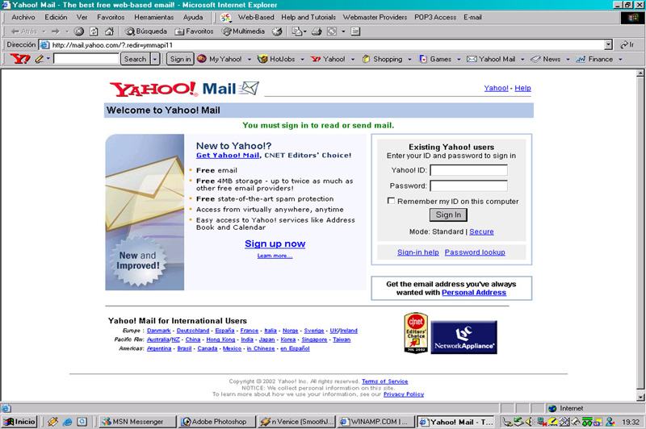

Como vimos, cuando tu navegador solicita a un servidor web una página, es posible que antes de enviártela haya tenido que ejecutar, por sí mismo o por delegación, algún programa para obtenerla. Ese programa es el que genera, en parte o en su totalidad, la página web que llega a tu equipo. En estos casos, el código se ejecuta en el entorno del servidor web.
Además, cuando una página web llega a tu navegador, es también posible que incluya algún programa o fragmentos de código que se deban ejecutar. Ese código, normalmente en lenguaje JavaScript, se ejecutará en tu navegador y, además de poder modificar el contenido de la página, también puede llevar a cabo acciones como la animación de textos u objetos de la página o la comprobación de los datos que introduces en un formulario.
Estas dos tecnologías se complementan una con otra. Así, volviendo al ejemplo del correo web, el programa que se encarga de obtener tus mensajes y su contenido de una base de datos se ejecuta en el entorno del servidor, mientras que tu navegador ejecuta, por ejemplo, el código encargado de avisarte cuando quieres enviar un mensaje y te has olvidado de poner un texto en el asunto.

Esta división es así porque el código que se ejecuta en el cliente web (en tu navegador) no tiene, o mejor dicho tradicionalmente no tenía, acceso a los datos que se almacenan en el servidor. Es decir, cuando en tu navegador querías leer un nuevo correo, el código Javascript que se ejecutaba en el mismo no podía obtener de la base de datos el contenido de ese mensaje. La solución era crear una nueva página en el servidor con la información que se pedía y enviarla de nuevo al navegador.
Sin embargo, desde hace unos años existe una técnica de desarrollo web conocida como AJAX, que nos posibilita realizar programas en los que el código JavaScript que se ejecuta en el navegador pueda comunicarse con un servidor de Internet para obtener información con la que, por ejemplo, modificar la página web actual.
Por ejemplo, cuando pulsas con el ratón encima de un correo que quieres leer, la página puede contener código Javascript que detecte la acción y, en ese instante, consultar a través de Internet el texto que contiene ese mismo correo y mostrarlo en la misma página, modificando su estructura en caso de que sea necesario. Es decir, sin salir de una página poder modificar su contenido en base a la información que se almacena en un servidor de Internet.
En este módulo vas a aprender a crear aplicaciones web que se ejecuten en el lado del servidor. Otro módulo de este mismo ciclo, Desarrollo Web en Entorno Cliente, enseña las características de la programación de código que se ejecute en el navegador web.
Muchas de las aplicaciones web actuales utilizan estas dos tecnologías: la ejecución de código en el servidor y en el cliente. Así, el código que se ejecuta en el servidor genera páginas web que ya incluyen código destinado a su ejecución en el navegador.